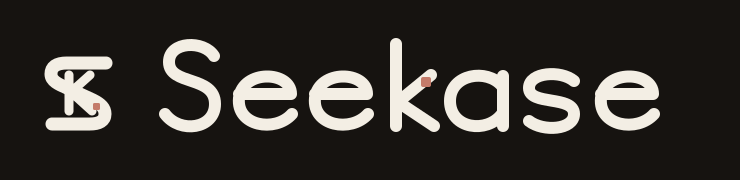
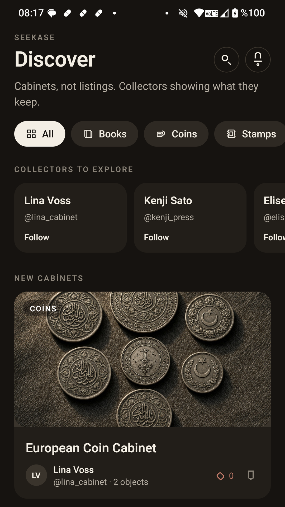
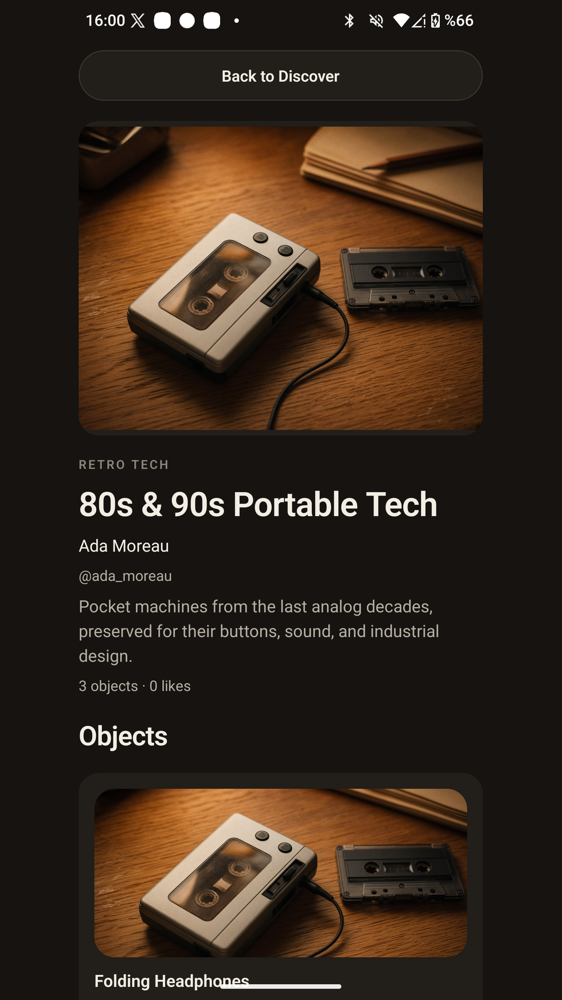
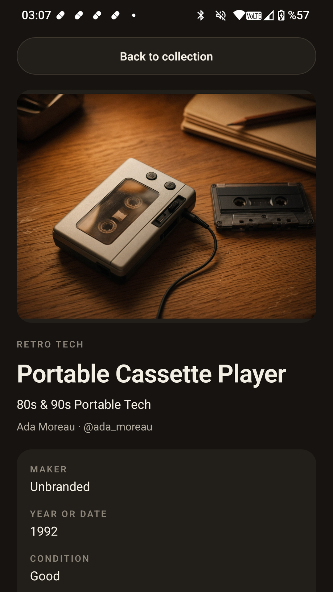
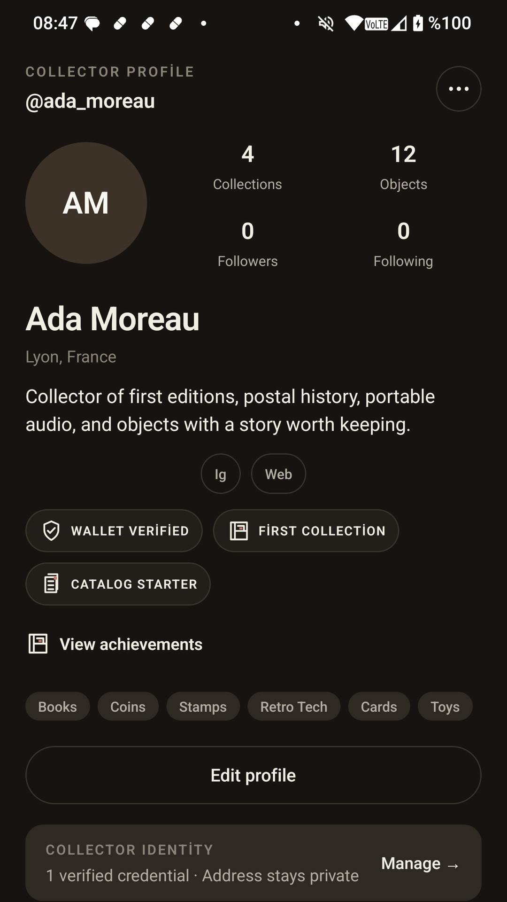
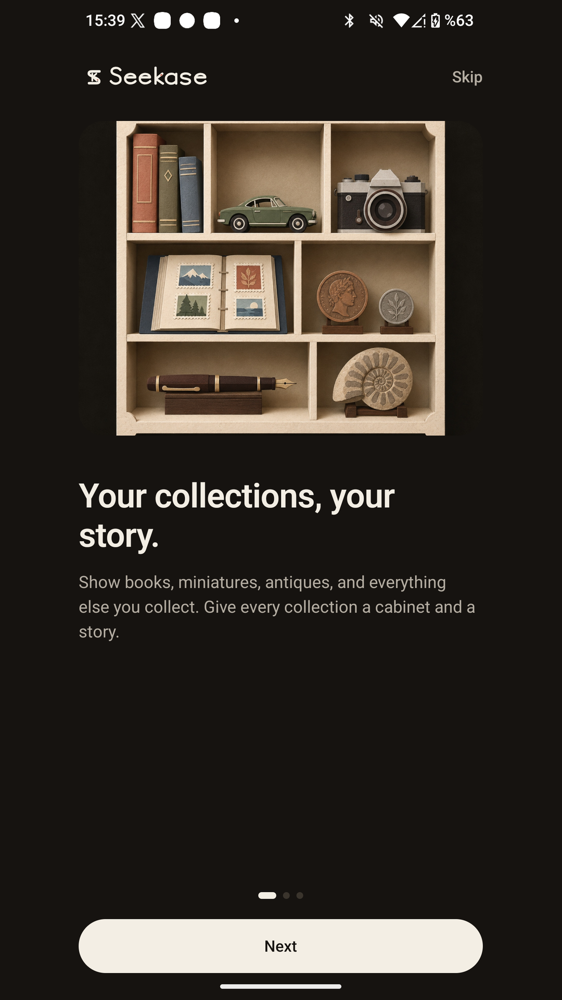
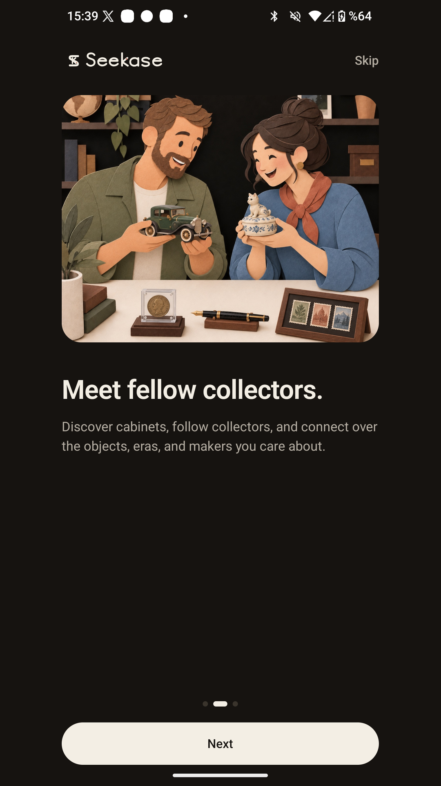
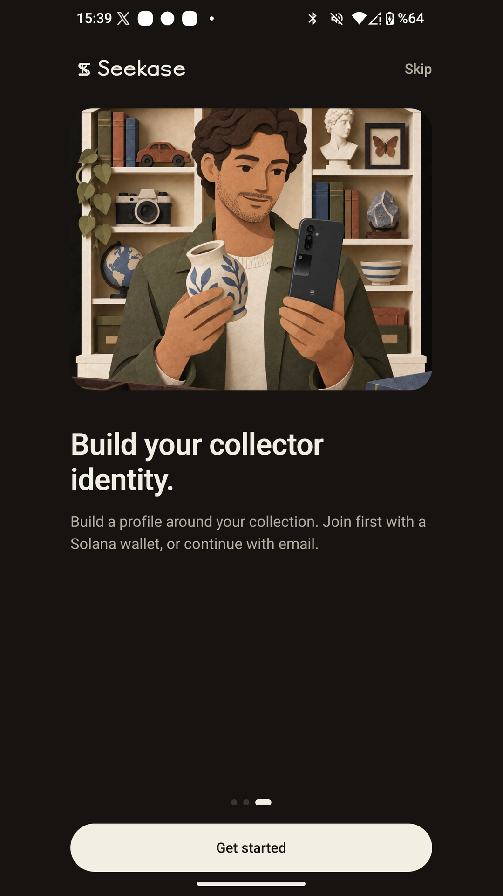
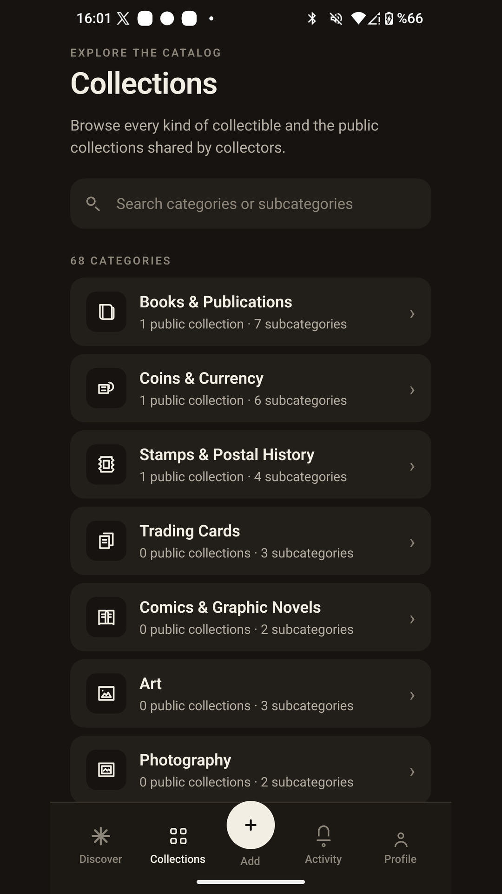

Scattered records
Photos, notes, spreadsheets, and specialist groups keep fragments of the same collection apart.

Seeker-first social collecting
Seekase turns personal collections into living digital museums, built around objects, context, and the collectors behind them.

The problem
Photos, notes, spreadsheets, and specialist groups keep fragments of the same collection apart.
Existing products reduce collections to prices, listings, and transactions instead of stories and provenance.
General social networks do not understand cabinets, categories, object metadata, or collector progress.
The product


Why Seeker

Retention loop



Trust and architecture
Profiles receive badge status. Raw wallet addresses, balances, token accounts, and signatures are excluded from public profile data.
Row Level Security, Edge Functions, private wallet identity tables, reporting, and blocking protect account boundaries.
In-app account deletion removes owned online data and photos. Public blockchain transactions remain immutable.
Working today

The vision
seekase.app